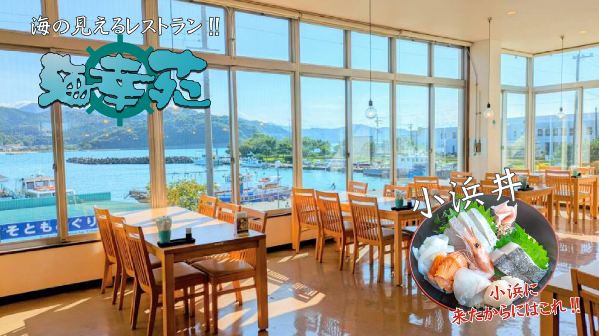
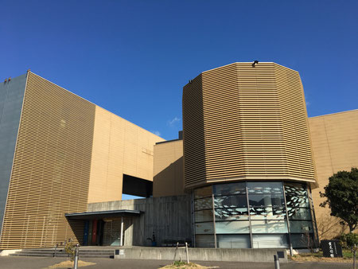

若狭フィッシャーマンズ

「あそぶ・たべる・つなぐ」をコンセプトに、おもてなしのこころ溢れる過ごしやすい店内となっています。 選りすぐりの若狭の銘品を多数取り揃えている物販コーナー、若狭の海が育んだ美味の数々をご用意しているレストランを満喫できます。
蘇洞門めぐり遊覧船

蘇洞門めぐり遊覧船は、日本海の荒波がつくりあげたダイナミックな景観をご覧いただく、約60分のクルージングです。 長さ6キロの断崖美と奇岩・洞門が織りなす歴史ロマンを満喫する旅。
押し寄せる波がつくりあげた海の芸術とともに、クルージングの醍醐味をたっぷりとお楽しみください。 運が良いと波や風の条件が合うと、蘇洞門に上陸できますよ。
御食国若狭おばま食文化館

古来、朝廷に「御贄（みにえ：天皇の御食料）」を納めた国を「御食国（みけつくに）」と呼びます。 伊勢・志摩・淡路とともに御食国と言われている若狭おばま。 こちらのミュージアムでは小浜の食の歴史を展示しています。
２Fの若狭工房では、伝統工芸体験をお楽しみいただけます。